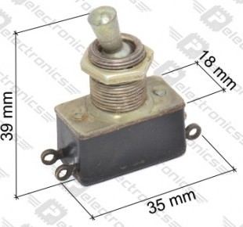
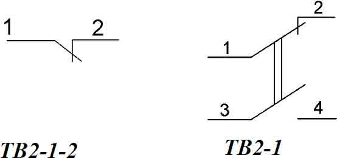
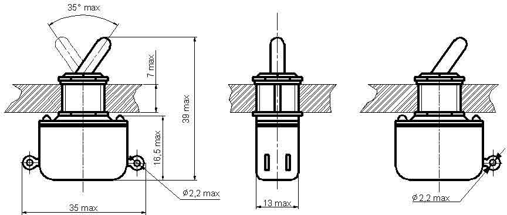

Тумблеры
Тумблер ТВ1-4
Контактные тумблеры с ручным рычажным приводом для объемного монтажа. Предназначены для работы в цепях постоянного и переменного тока в радиоэлектронной аппаратуре, приборной и специальной технике. Изготавливаются в 12 вариантах исполнения. Количество полюсов: 1, 2, 4. Комплектуются протектором черного цвета.
Тумблер ТВ1-4 четырехполюсный, имеет нормально замкнутые контакты 1-2, 3-4, 5-6, 7-8. Электрическая схема коммутации и цоколевка тумблера.
Характеристики тумблеров ТВ1-1, ТВ1-2, ТВ1-4:
- Род тока - постоянный, переменный
- Вид нагрузки - активная
- Напряжение - от 1,6 до 220 В
- Ток - от 0,001 до 5 А
- Максимальная коммутируемая мощность - 250 Вт
- Количество циклов переключений - 10000
- Масса, не более - ТВ1-1 45 г, ТВ1-2, ТВ1-4 50 г.
- Сопротивление контакта, не более 0,01 Ом
- Электрическая прочность изоляции - 1100 В
- Сопротивление изоляции, не менее - 1000 МОм
- Усилие переключения - от 3,9 до 14,7 Н
- Повышенная рабочая температура, для приемки «1» / «5» - 70°С / 85°С
- Пониженная рабочая температура минус 60°С
- Повышенная относительная влажность, для исполнения В при 350С - 98%, для исполнения УХЛ при 250С - 98%
- Гарантийная наработка, для приемки «1» /«5» - 10000 / 5000 часов
- Гарантийный срок с даты изготовления, для приемки «1» / «5» - 8 / 10 лет
- Содержание драгоценных металлов - серебро 4,97409 грамм в одной единице изделия.
ТВ2-1
Тумблер ТВ2-1 однополюсный - переключатель мгновенного действия предназначен для работы в электрических цепях постоянного и переменного тока в радиоэлектронной аппаратуре. Изготовлен в исполнении для умеренного и холодного климата, является изделием ручного управления и предназначен для объемного монтажа.



Технические характеристики тумблеров ТВ2-1-2 и ТВ2-1:
- Род тока - постоянный, переменный
- Вид нагрузки - активная
- Напряжение - не менее 1,6 В и не более 220 В
- Ток - не менее 0,001 А и не более 1 А
- Максимальная коммутируемая мощность 60 Вт (ВхА)
- Масса, не более - 22,6 г.
- Сопротивление контакта, не более - 0,01 Ом
- Электрическая прочность изоляции - 1100 В эфф.
- Сопротивление изоляции, не менее - 1000 МОм
- Усилие переключения - от 3,9 до 14,7 Н
- Повышенная рабочая температура - 70°С
- Пониженная рабочая температура - минус 60°С
- Повышенная относительная влажность:
- - для исполнения В при 350С - 98%
- - для исполнения УХЛ при 250С - 98%
- Гарантийная наработка - 10000 часов
- Гарантийный срок с даты изготовления - 8 лет
- Содержание драгоценных металлов - серебро 0.0992 - 0,36015 грамм, в зависимости от года выпуска.